In this document we discuss the solution of a time-dependent beam problem: The large-amplitude oscillations of a thin-walled elastic ring. Specifically we shall
- demonstrate how to specify initial conditions for time-dependent simulations with
oomph-lib'sKirchhoffLoveBeamelements, - demonstrate how to use the
dump/restartfunctions forKirchhoffLoveBeamelements, - show that timesteppers from the
Newmarkfamily- can be used with variable timesteps,
- conserve energy,
- can allocate and maintain storage for the solution at previous timesteps.
We wish to compute the large-amplitude oscillations of a linearly-elastic, circular ring of undeformed radius 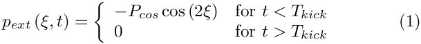 which initiates an oscillation in which the ring deforms into a non-axisymmetric mode, as indicated in the sketch below: 
Sketch of the buckling ring. We choose the same non-dimensionalisation as in the previous steady example and parametrise the position vector to the ring's undeformed centreline as 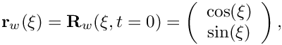 where the non-dimensional arclength 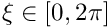 along the ring's undeformed centreline acts as the Lagrangian coordinate. Assuming that the ring is at rest for |
 and wall thickness
and wall thickness  , subject to a transient pressure load
, subject to a transient pressure load  , we wish to compute the position vector to the deformed ring's centreline, 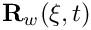 , for 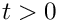 .
, we wish to compute the position vector to the deformed ring's centreline, 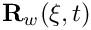 , for 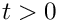 .
Results
The figure below shows a snapshot, taken from an animation of the ring's computed deformation for a wall thickness of  , a pressure load of 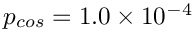 , and 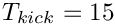 . The arrows represent the instantaneous velocity of the ring and show that at this point in time the ring is still collapsing inwards.
, a pressure load of 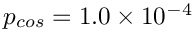 , and 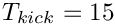 . The arrows represent the instantaneous velocity of the ring and show that at this point in time the ring is still collapsing inwards.

The red line with square markers in the figure below shows the time-history of the ring's control displacement: At  the ring is in its initial undeformed configuration and we have 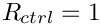 . Application of the cosinusoidal pressure load during the interval 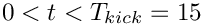 causes the ring to deform non-axisymmetrically in the mode shape shown in the plot above. Because of inertia, the ring continues to collapse inwards even after the pressure load has been "switched off". The ring reaches its most strongly collapsed configuration, in which the radius of the control point is reduced to just above 20% of its original value, at 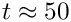 . Subsequently, the elastic restoring forces cause the ring to "reopen" to its axisymmetric configuration (where
the ring is in its initial undeformed configuration and we have 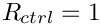 . Application of the cosinusoidal pressure load during the interval 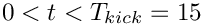 causes the ring to deform non-axisymmetrically in the mode shape shown in the plot above. Because of inertia, the ring continues to collapse inwards even after the pressure load has been "switched off". The ring reaches its most strongly collapsed configuration, in which the radius of the control point is reduced to just above 20% of its original value, at 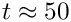 . Subsequently, the elastic restoring forces cause the ring to "reopen" to its axisymmetric configuration (where  again), which it traverses with finite velocity at 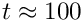 . The ring overshoots the axisymmetric state and deforms in the "opposite" direction to the deformation during the initial stages of collapse. It reverses its motion again when it reaches a second non-axisymmetric extreme at 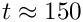 . This is seen most clearly in the animation of the ring's motion.
again), which it traverses with finite velocity at 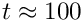 . The ring overshoots the axisymmetric state and deforms in the "opposite" direction to the deformation during the initial stages of collapse. It reverses its motion again when it reaches a second non-axisymmetric extreme at 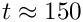 . This is seen most clearly in the animation of the ring's motion.

The remaining lines in the plot show the ring's kinetic and potential (i.e. the strain) energy and their sum. Up to 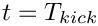 , the external load does work on the ring and increases its kinetic and potential (strain) energy. Once the external load is "switched off" the total energy stored in the system should (and indeed does) remain constant. See the section The default non-dimensionalisation for the kinetic and potential (strain) energies for further details.
Global parameters and functions
As usual, we employ a namespace to define the problem's physical parameters and the load that acts on the ring. For the pressure loading defined in equation (1), the load is given by
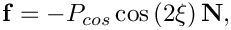
where  is the outer unit normal to the ring's deformed centreline.
is the outer unit normal to the ring's deformed centreline.
We also define the non-dimensional wall thickness  and the timescale ratio
and the timescale ratio  . These are multiplied by powers of a scaling factor whose role will become apparent in the Exercises. (By default, the scaling factor is set to 1.0 and does not play any role.)
. These are multiplied by powers of a scaling factor whose role will become apparent in the Exercises. (By default, the scaling factor is set to 1.0 and does not play any role.)
The driver code
The main function is very simple. We store the (up to) two optional command line arguments which (if present) specify (i) a flag that indicates if the code is run in validation mode, and (ii) the name of a restart file.
Next, we build the problem with thirteen HermiteBeamElements and a Newmark<3> timestepper ( recall that a Newmark<NSTEPS> timestepper allocates and manages storage for the solution at NSTEPS previous timesteps; we shall illustrate this capability in the section How to retrieve the solution at previous timesteps ), before executing the timestepping loop.
The problem class
The problem class is very similar to that used in the previous, steady example , but includes a few (obvious) additional functions that specify the initial conditions (Setting the initial condition) and perform the timestepping (The timestepping loop). We also provide two functions that allow us to dump the solution to disk (Writing a restart file) and to restart the time-dependent simulation (Restarting from a file).
The private member data includes an output stream that we shall use to write a trace file. The two boolean flags indicate if the code is run in validation mode, and if the simulation has been restarted, respectively.
The problem constructor
The constructor assigns default values for the two control flags corresponding to a non-validation run without restart. We create a timestepper of the type specified by the template parameter and add it to the Problem's collection of timesteppers.
Next we build the geometric object that defines the shape of the ring's undeformed centreline (an ellipse with unit half axes, i.e. a unit circle) and use it to build the mesh. As in the previous steady example we exploit the symmetry of the deformation and only discretise a quarter of the domain.
The boundary conditions are identical to those in the steady example.
Finally, we pass the pointers to the load function and the pointer to the geometric object that specifies the ring's initial shape to the elements and assign the equation numbers.
Post-processing
We compute the total kinetic and potential (=strain) energies stored in the (quarter-)ring and document them, their sum, and the control radius in the trace file.
Next we use the default output function to document the ring shape and add a few tecplot commands to facilitate the animation of the results.
How to retrieve the solution at previous timesteps
The next few lines illustrate how to retrieve (and document) the ring shape at previous timesteps. Recall that Newmark timesteppers are implicit, single-step timestepping schemes that compute approximations for the time-derivatives, based on the solution at the current time level, and on "history values" that represent quantities at a single previous timestep. In some applications (particularly in fluid-structure interaction problems) it is necessary to keep track of the solution at additional previous timesteps. Storage for such additional history values is allocated (and managed) by the generalised Newmark<NSTEPS> timesteppers if NSTEPS > 1. We stress that these additional history values are not involved in the approximation of the time-derivatives; they are simply stored and updated by the timestepper when the solution is advanced to the next timestep.
Recall also that the member function TimeStepper::nprev_values() may be used to determine how many of the history values that are stored in an associated Data object represent the solution at previous timesteps. Finally, recall that history values that represent the solution at previous timesteps are always stored before those that represent "generalised" history values (such as approximations of the first time-derivative at the previous timestep, etc). It is therefore always possible to determine how many previous solutions are stored in a Data object, and where they are stored.
To document the shape of a HermiteBeamElement at a previous timestep, the HermiteBeamElement provides an additional three-argument output function that may be called as follows:
At timestep t, these statements create the output files RESLT/ring t-0, .datRESLT/ring t-1, .datRESLT/ring t-2, .datRESLT/ring t-3, which contain the shape of the ring at the .datt -th, ( t -1)th, ( t -2)th and
( t -3)th, timestep, respectively.
Finally, we write a restart file that will allow us to restart the simulation.
Writing a restart file
Writing the restart file for the present problem is as easy as in the previous examples, as the generic Problem data may again be written with the Problem::dump(...) function. We customise the restart file slightly by adding the value 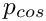 and the flag that indicates if the code is run in validation mode.
Restarting from a file
The restart operation reverses the steps performed in the dump function: We recover the two problem-specific parameters and then read the generic Problem data with the Problem::read(...) function.
Setting the initial condition
The assignment of initial conditions depends on whether or not a restart from a previous computation is performed. If no restart is performed, we specify the initial timestep, dt, and assign history values that are consistent with an impulsive start from the ring's initial shape.
If the computation is restarted, the name of the restart file will have been specified on the command line. We try to open the restart file
and display an error message and terminate the program execution if the file cannot be opened.
If the file can be opened we call the restart function which returns the the Problem into the state it was in when the restart file was written. No further steps are required.
The timestepping loop
We start by converting the (optional) command line arguments into the flags that determine what mode the code is run in: Without command line arguments, we use the default assignments, as specified in The problem constructor.
A single command line argument is interpreted as the "validation run" flag (1 for true, 0 for false) which will be used to limit the number of timesteps.
The presence of two command line arguments indicates that a restart is performed. In this case the second argument specifies the name of the restart file.
We print an error message if the code is run with any other number of command line arguments.
We create a DocInfo object to specify the name of the output directory, and open the trace file.
Next, we set the problem parameters and the number of timesteps to be performed, before assigning the initial conditions.
The timestepping loop itself is practically identical to that used in driver codes for other unsteady problems. To demonstrate that Newmark timesteppers can deal with variable timesteps, we reduce the timestep slightly after every step.
Comments and Exercises
The default non-dimensionalisation of time
The non-dimensionalisation of the principle of virtual displacements that forms the basis of oomph-lib's beam elements, was discussed in detail in an earlier example. However, since this is the first time-dependent beam problem it is worth re-iterating that, by default, time is non-dimensionalised on the timescale for extensional deformations i.e. on the natural timescale
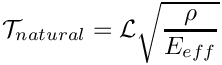
of oscillations in which the beam is stretched/compressed along its centreline. The relation between the dimensional time  and its non-dimensional equivalent
and its non-dimensional equivalent  is given by
is given by
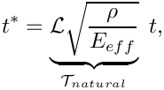
where  is the lengthscale used to non-dimensionalise all lengths (in the present example 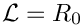 , the undeformed radius of the ring),
is the lengthscale used to non-dimensionalise all lengths (in the present example 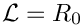 , the undeformed radius of the ring),  is the density of the ring, and
is the density of the ring, and  is the "effective" 1D Young's modulus of the beam, formed with its 3D Young's modulus
is the "effective" 1D Young's modulus of the beam, formed with its 3D Young's modulus  , and its Poisson ratio
, and its Poisson ratio  .
.
This non-dimensionalisation of time is consistent with the non-dimensionalisation of all stresses/loads on 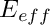. It implies that if the beam deforms in a mode in which its deformation is dominated by bending effects, the numerical values for the non-dimensional load are relatively small (indicating that the loads required to induce a deformation of a given size are much smaller if the ring deforms in a bending-dominated mode, than in a mode in which it is dominated by extensional deformations), while the non-dimensional period of the oscillation is relatively large (indicating that bending oscillations occur at a much smaller frequency than oscillations in which the beam's deformation is dominated by extensional deformations).
The default non-dimensionalisation for the kinetic and potential (strain) energies
With the default non-dimensionalisation discussed above, the non-dimensional kinetic and potential (strain) energies are given by
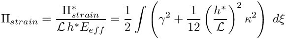
and
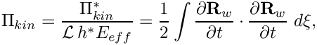
respectively. Conservation of energy implies that
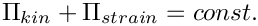
if there is no external forcing. The plot of the energies shown at the beginning of this document shows that the time-integration with the Newmark method is energy-conserving.
Changing the timescale used to non-dimensionalise the equations
It is possible to non-dimensionalise the governing equations on a different timescale,  , so that
, so that
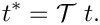
This is achieved by overwriting the default assignment for the ratio
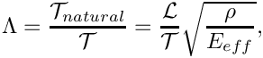
of the natural timescale 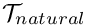 and the time used to non-dimensionalise the equations.
By default, we have  but the member function
but the member function
may be used to assign a different value for the square of the timescale ratio which may also be interpreted as the non-dimensional density. The case 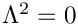 therefore corresponds to the case of zero wall inertia. (We store rather than 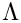 itself because the governing equations contain only the square of the timescale ratio). As with most other physical parameters, must be defined as a global variable, preferably by adding it to the namespace that contains the problem parameters, e.g.
...and passing a pointer to to the elements. The statement can be added to the loop over the elements that passes the pointer to the pressure load to the elements.
The definition of the non-dimensional kinetic energy used in KirchhoffLoveBeamEquations::get_energy(...) incorporates the timescale ratio by computing the non-dimensional kinetic energy as
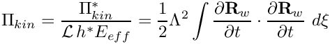
which, for the default assignment 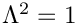 , reduces to the definition given above.
Exercises
- As discussed in The default non-dimensionalisation of time , the period of the oscillation ( 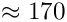 ) computed in the above example has a large numerical value because time was non-dimensionalised on a timescale that is representative for oscillations in which the ring's motion is dominated by extensional (rather than bending) deformations. Furthermore, because the load is non-dimensionalised on the ring's extensional (rather than its bending) stiffness, a very small load 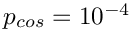 was sufficient to induce large-amplitude oscillations.
Change the load function to a spatially-constant external pressure (which will deform the ring axisymmetrically so that its motion is dominated by extensional deformations) to confirm that in this mode- 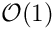 pressures are required to induce axisymmetric displacements, and
- the period of the axisymmetric oscillations is .
- Use the principle of virtual displacements (without prestress)
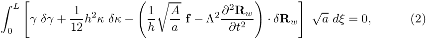
to show (analytically) that for bending-dominated deformations (i.e. deformations for which 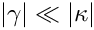)- an increase in the wall thickness by a factor 2, say, will
- reduce the amplitude of the ring's static deformation by a factor of 8 (thicker rings are stiffer)
- reduces the period of the unforced oscillations (i.e. the oscillations it performs when 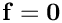 ) by factor of 4 (thicker rings oscillate more rapidly).
- an increase in the ring's density 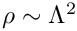 by a factor of 2, say, increases the period of its bending-dominated oscillations by a factor of 4 (heavier rings oscillate more slowly).
and a density , subject to a forcing of magnitude  will deform (approximately) as a ring of wall thickness 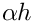 with a density
will deform (approximately) as a ring of wall thickness 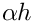 with a density  , subject to a forcing of magnitude 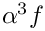. Confirm these theoretical predictions computationally: Change the initial assignment for the scaling factor
, subject to a forcing of magnitude 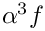. Confirm these theoretical predictions computationally: Change the initial assignment for the scaling factor Global_Physical_Variables::Alphaand repeat the computation. - an increase in the wall thickness
- Confirm that the restart procedure works correctly by plotting the time-trace obtained from a restarted simulation on top of the original time-trace.
- Compare the results obtained from a simulation with a variable timestep against the results obtained from a computation with a fixed timestep (comment out the line that reduces the timestep after every solve).
- Compare the various output files generated in
doc_solution()to confirm that theNewmark<3>timestepper correctly maintains the history of the solution at three previous timesteps. E.g. confirm that the output fileRESLT/ring3-0.datwhich contains the ring shape at timestep 3 is identical toRESLT/ring5-2.datwhich contains the ring shape computed two timesteps before timestep 5. Exploreoomph-lib'sinternal use of the history values by analysing the functionsHermiteBeamElement::output(...)andFiniteElement::interpolated_x(...)FiniteElement::x_gen(...)
Source files for this tutorial
- The source files for this tutorial are located in the directory:
demo_drivers/beam/unsteady_ring/ - The driver code is:
demo_drivers/beam/unsteady_ring/unsteady_ring.cc
PDF file
A pdf version of this document is available.